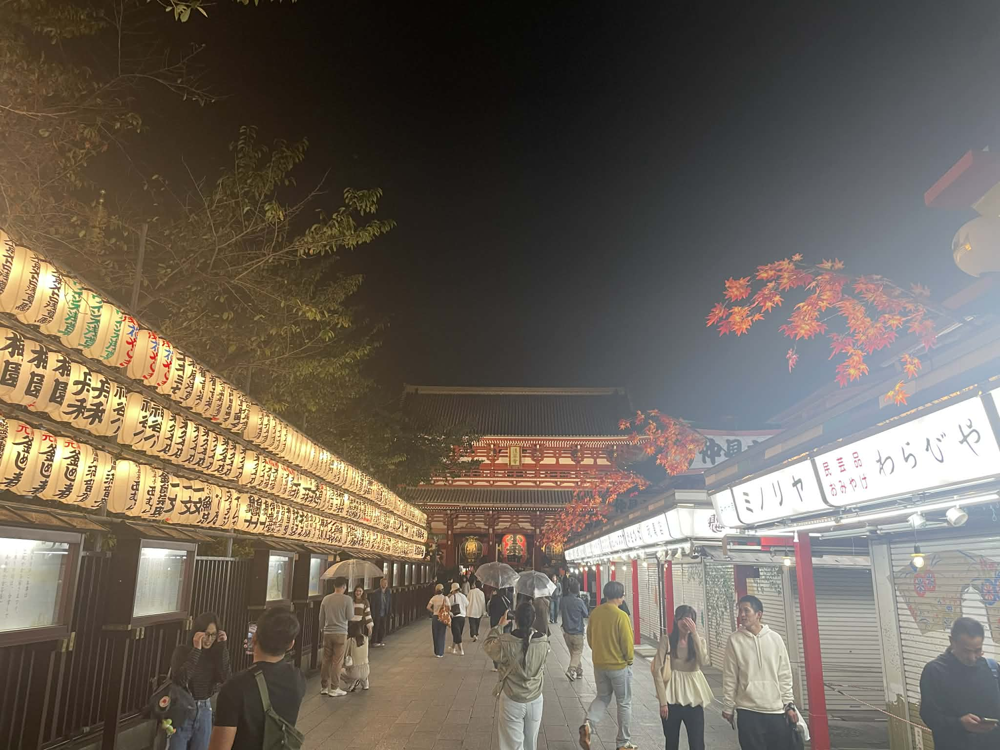
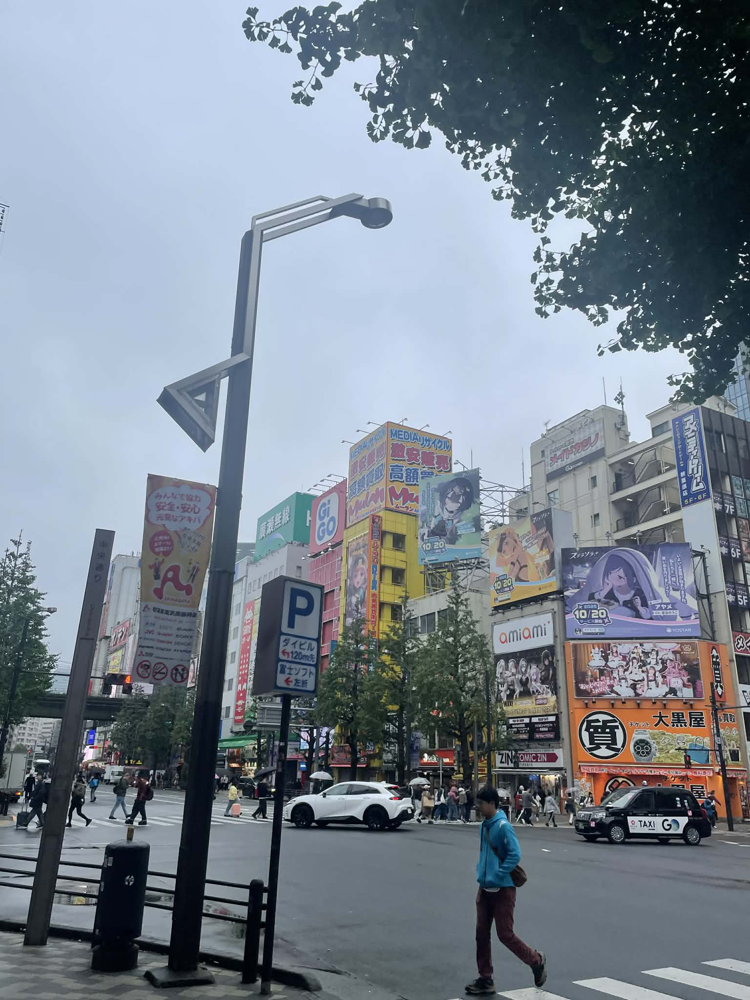
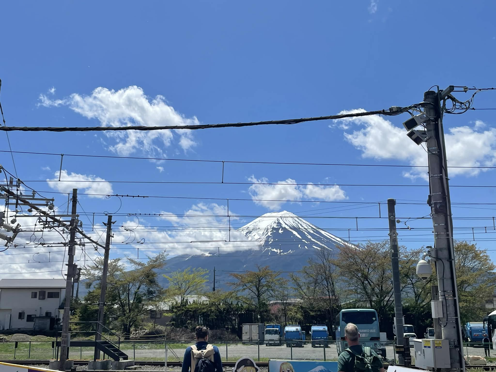
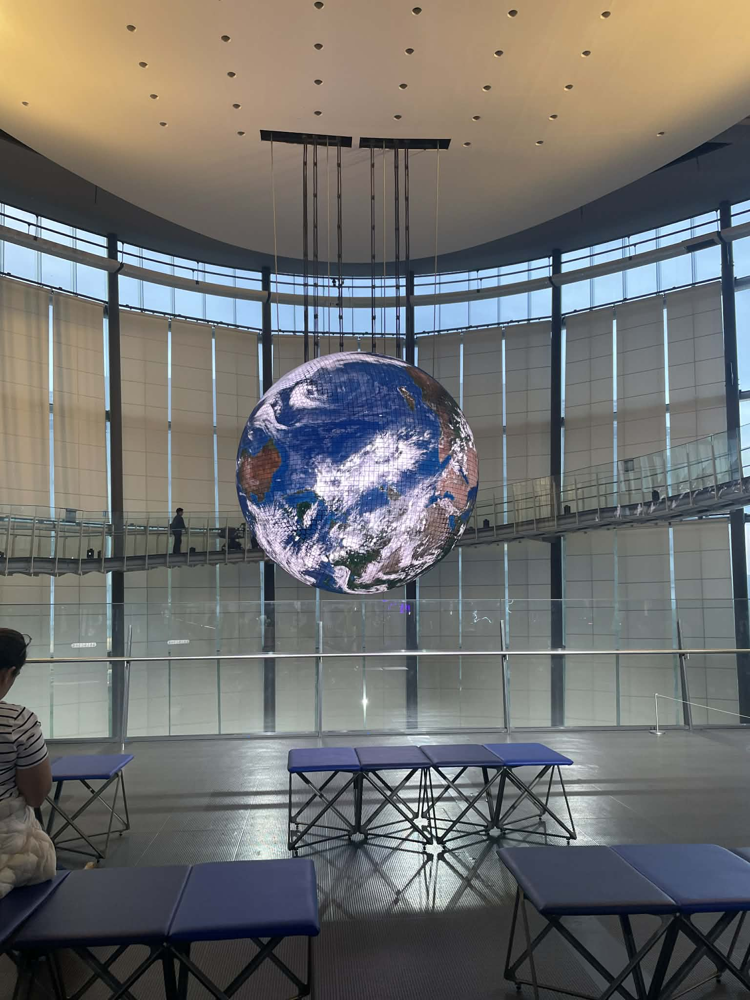

-
 Sensoji at night time. -
 Akihabara in the late morning. -

Ueno park during a rain. -
 Mt. Fuji with no clouds. -
 Miraikan, museum of the future.
You can find more places to explore in Tokyo in Japan guide web